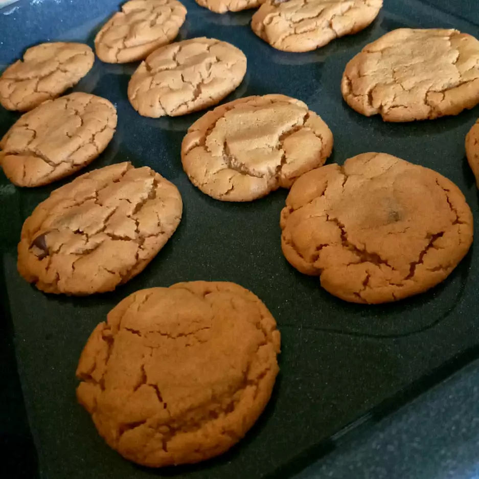

Flourless peanut butter cookies

Description
This simple, tasty recipe yields 12 to 16 cookies,
but is so simple that it can be doubled (or tripled!) easily.
Ingredients (12 servings)
- 1 vup of peanut butter
- 1/2 cups of white sugar
- 1/3 cups of packed brown sugar
- 1 egg
- 1 teaspoon vanilla extract
- 1/2 teaspoon of baking soda
- 1/2 cup of semisweet chocolate chips (optional)
Steps
- Pre-heat oven to 350 degrees F (175 degrees C).
- Beat peanut butter, white sugar, and brown sugar together in a large bowl
with an electric mixer until smooth. Stir egg, vanilla extract, and baking
soda into peanut butter mixture; stir in chocolate chips.
- Drop mixture by small rounded spoonfuls onto a baking sheet about 2 inches apart.
- Season with some salt, pepper and nutmeg. Stir in the cheese, this must
be a cheese that melts easily, like Gouda cheese. Turn off the heat
- Bake in the preheated oven until cookies are flattened and golden,
about 8 minutes.